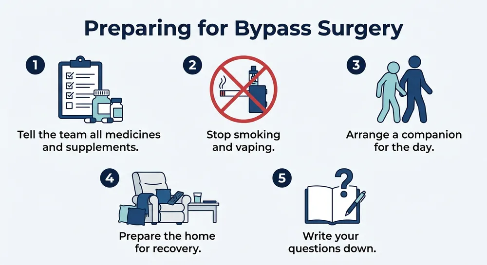

وقتی پزشک بایپس عروق کرونر را پیشنهاد میکند، زمان بین تصمیم تا روز عمل معمولاً کوتاه نیست و در همین فاصله کارهای زیادی هست که باید انجام شود. آنچه پیش از عمل انجام میدهید، روی ایمنی بیهوشی، سرعت بهبودی و حتی نتیجهی عمل اثر دارد. این مقاله، از دید کسی که در اتاق عمل کار کرده، فهرست آمادگی را ساده و مرحلهبهمرحله توضیح میدهد.
توضیحات این مقاله بر اساس راهنمای عمومی سرویس ملی بهداشت انگلستان و Mayo Clinic تنظیم شده است. دستور تیم قلب و جراح شما همیشه مقدم است.
بیماران قلبی معمولاً پیش از عمل بررسیهای زیادی میشوند: معاینه، آزمایش خون، نوار قلب و گاهی تصویربرداری. هدف این بررسیها این است که تیم بداند قلب، کلیهها، ریهها و سایر اندامهای شما برای بیهوشی و عمل آمادهاند. هر چیزی که پنهان بماند، ممکن است برنامهی عمل را تغییر دهد.
بسیاری از بیماران فکر میکنند فقط روز عمل مهم است، اما هفتههای قبل از عمل فرصت خوبی برای آماده کردن بدن است. تغذیهی مناسب، کاهش مصرف نمک، حرکت سبک روزانه و کنترل فشار خون و قند خون، همه به آمادگی کمک میکنند.
سابقهی تپش قلب، سکتهی قلبی، فشار خون، دیابت، بیماری کلیه، آسم و هر عمل قبلی را باید به تیم بگویید. اگر حساسیت دارید، حتماً اعلام کنید. این موارد روی انتخاب بیهوشی و روش عمل اثر دارند.
فهرست کامل داروها، از جمله داروهای گیاهی و مکملها، را همراه داشته باشید. داروهای رقیقکنندهی خون و بعضی داروهای قلبی ممکن است قبل از عمل قطع یا تغییر داده شوند، اما این تصمیم را فقط پزشک قلب شما میگیرد. مقالهی داروها پیش از عمل را بخوانید تا پرسشهای درست را بپرسید.
اگر قبلاً عمل قلبی یا غیرقلبی داشتهاید، گزارش آن را پیدا کنید. این کار به تیم کمک میکند تا چسبندگیهای احتمالی یا تجربهی بیهوشی قبلی را بداند. مقالهی افشای سابقهی پزشکی همین نکتهها را توضیح میدهد.
تغذیهی قبل از عمل هم اهمیت دارد. غذاهای کمنمک، سبزیجات، حبوبات و پروتئین سبک به بدن کمک میکنند آمادهتر باشد. اگر بیماری کلیه یا دیابت دارید، رژیم شما باید با دستور پزشک هماهنگ شود و خودسرانه تغییر داده نشود. از مکملهای گیاهی هم بدون مشورت استفاده نکنید، چون ممکن است با داروهای قلبی تداخل داشته باشند.
سیگار و قلیان روی ریهها، زخم و جریان خون اثر منفی دارند. اگر سیگار میکشید، هرچه زودتر ترک کردن برای بدن شما سودمند است، حتی اگر فرصت کم باشد. مصرف الکل هم با بیهوشی و فشار خون تداخل دارد و بهتر است محدود شود.
اگر ترک برایتان سخت است، این موضوع را با تیم درمان مطرح کنید. راهکارهای کمک به ترک در کنار برنامهی آمادگی قرار میگیرد و حمایت آن بیشتر از تلاش تنهایی است.
این تصویر با هوش مصنوعی ساخته شده است، به همین دلیل متن روی آن انگلیسی است، چون زبان انگلیسی بهتر نشان داده میشود. توضیح کامل آن را در زیر تصویر به فارسی میخوانید.

توضیح تصویر: این اینفوگرافی پنج کار اصلی قبل از عمل بایپس را نشان میدهد. مرحلهی اول گفتن کامل داروها و مکملها به تیم است. مرحلهی دوم ترک سیگار و قلیان است. مرحلهی سوم تعیین همراه برای روز عمل و روزهای بستری است. مرحلهی چهارم آماده کردن خانه برای بازگشت است، مثل جابهجا کردن وسایل پرکاربرد به طبقهی همکف. مرحلهی پنجم نوشتن پرسشهاست تا در گفتوگو چیزی فراموش نشود.
در هفتههای قبل از عمل، تیم درمان چند آزمایش و بررسی انجام میدهد. آزمایش خون، بررسی عملکرد کلیه و کبد، و گاهی آزمایش ادرار و معاینهی دندان از جملهی آنهاست. ممکن است نوار قلب یا اکو هم درخواست شود. گفتن هر نتیجهی غیرمنتظره، حتی اگر کوچک باشد، مهم است.
اگر دندان مصنوعی، پیسمیکر، مفصل مصنوعی یا وسیلهی پزشکی دیگری دارید، آن را به تیم اعلام کنید. این موارد ممکن است در روز عمل نیاز به توجه ویژه داشته باشند.
در هفتههای قبل از عمل، اگر دچار تنگی نفس، درد قفسهی سینه یا تپشهای ناگهانی شدید، به تیم خود اطلاع دهید. این علائم ممکن است نشان دهند که وضعیت قلب شما نیاز به بررسی دوباره دارد و برنامهی عمل ممکن است تغییر کند. گفتن زودهنگام آنها بهتر از پنهان کردنشان است.
برای بیهوشی باید معده خالی باشد. زمان دقیق ناشتایی را فقط از مرکز قلب بگیرید، چون پروتکل هر مرکز متفاوت است. اگر بهطور اتفاقی چیزی خورده یا نوشیدهاید، پیش از ورود به تیم اطلاع دهید تا زمان عمل بازبینی شود.
در روز عمل از آرایش، عطر، لاک ناخن، لنز تماسی و جواهرات دوری کنید. لباس راحت بپوشید و مدارک هویتی، پروندهی پزشکی و فهرست داروها را همراه داشته باشید. بیشتر بیماران پیش از عمل بیهوشی عمومی دارند؛ دربارهی گزینهها در بیهوشی عمومی و نخاعی بیشتر بخوانید.
بعد از ترخیص، به کمک نیاز خواهید داشت. یک همراه بالغ را از پیش تعیین کنید که شما را به خانه برساند و در شبهای اول کنارتان باشد. خانه را هم آماده کنید: وسایل پرکاربرد را در دسترس بگذارید، فرشهای لغزنده را جمع کنید و جای خوابیدن را راحت کنید.
داروهای تجویزی را از پیش تهیه کنید تا بعد از ترخیص دچار وقفه نشوید. فهرست پرسشهای خود را هم آماده کنید؛ بسیاری از بیماران در لحظهی ویزیت پرسشی را فراموش میکنند. میتوانید از سؤالهای قبل از عمل شروع کنید.
آیا باید داروی قلبیام را قطع کنم؟
این تصمیم را فقط پزشک قلب شما میگیرد. هیچ دارویی را بدون دستور قطع یا شروع نکنید.
آیا قبل از عمل میتوانم ورزش کنم؟
ورزش سبک و پیادهروی کوتاه معمولاً مفید است، اما برنامهی آن را با تیم درمان هماهنگ کنید.
اگر سرماخوردگی داشته باشم، عمل لغو میشود؟
ممکن است زمان عمل تغییر کند. تیم پزشکی وضعیت شما را بررسی و تصمیم میگیرد.
چه کسی باید همراه من باشد؟
یک فرد بالغ که بتواند در تصمیمگیریها و بازگشت به خانه کمک کند. اگر خانواده ندارید، با تیم درمان دربارهی حمایت جایگزین صحبت کنید.